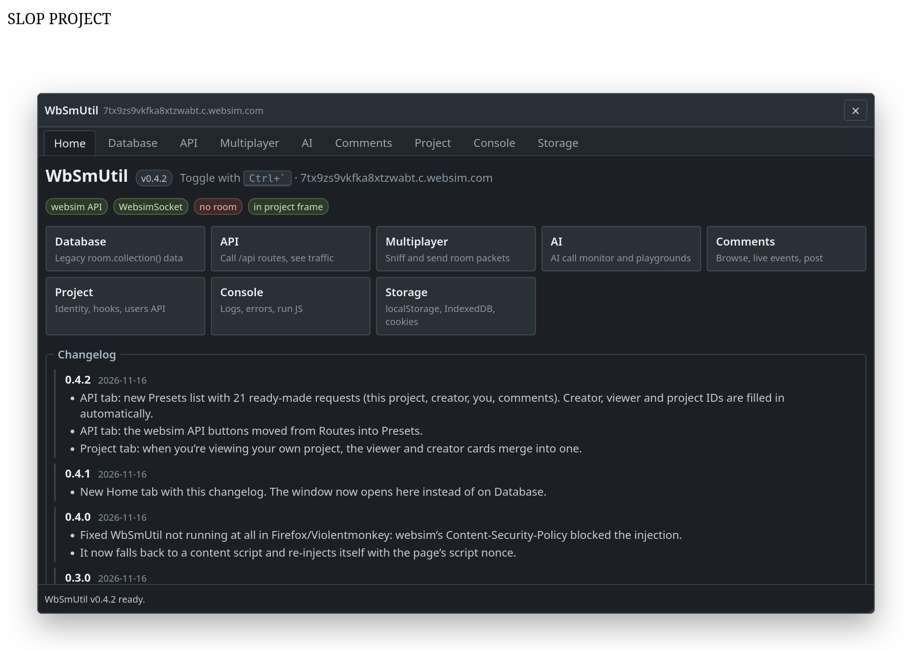

Devtools for websim projects.
WbSmUtil is a userscript that opens a toolkit window inside any websim project: browse databases, call your /api routes, sniff multiplayer packets, test AI calls, and more.

Click the tabs to tour the real thing. Every image is a screenshot of WbSmUtil running in Firefox on a live websim project, @1st/slug. This page is only a tour: nothing here runs the userscript.
What it does
Runs where your project runs
Websim puts each project in an iframe on its own *.c.websim.com subdomain. WbSmUtil opens inside that frame, so it has the same websim, WebsimSocket and /api access as your code.
Sees what happened before you opened it
Hooks start at page load, so the logs already include the project's first requests, packets, AI calls and console errors.
Hands off your page
Every hook calls the original unchanged. WbSmUtil never creates a room or connection on its own, and closing the window stops all of its work.
Isolated UI
The window lives in a shadow root above the page, so your project's CSS and key handlers can't reach it, and it can't reach theirs.
Install
- Install a userscript manager: Violentmonkey (Firefox, Chrome) or Tampermonkey.
- Open the install link and confirm. Updates come automatically from GitHub.
- Open any websim project, click inside it, and press Ctrl + ` (the key left of 1). You can also run
WbSmUtil.open()in the console.
Docs
Opening the window
Press Ctrl + ` while focus is anywhere on a websim project page. If focus is on websim.com around the project, the shortcut is passed into the project frame. If the window ever opens on websim.com itself, use ⧉ Move into project frame in its title bar.
Each frame the script runs in logs a line such as [WbSmUtil] loaded in <id>.c.websim.com. If there's no line for the project frame, the script isn't running there.
Tabs
| Tab | What it's for |
|---|---|
| Home | Version, status badges (websim API, WebsimSocket, room, frame), shortcuts to every tab, and the changelog. |
| Database | Legacy room.collection() databases: finds collections in records and source, pages through records, and creates entries from an inferred template. Only uses a room the page already has. |
| API | Request builder for your /api/* routes. Requests carry your real x-websim-* identity headers. Also: 21 presets for the public websim API, saved requests, a log of every fetch with replay, and route discovery from the public server.js. |
| Multiplayer | Packet log for WebsimSocket.joinRoom() rooms and legacy sockets: in ↓, out ↑. Send packets as you, deliver fake incoming packets to your onmessage, replay logged ones, and inspect legacy presence and roomState. |
| AI | Monitor for websim.chat, imageGen, textToSpeech and agent calls (arguments, results, errors, timing), plus chat, image and speech playgrounds. |
| Comments | Browse and search with every getComments filter, react, follow live comment:created events, and post comments or replies. |
| Project | Frame and hook status, project / viewer / creator identity, notification permission, websim.upload, the users API, and a log of every websim.* call. |
| Console | The project's console.* output, uncaught errors and rejections, plus a JavaScript runner in the project frame (await works). |
| Storage | localStorage and sessionStorage editor, read-only IndexedDB browser, cookies. |
Log filters
Every log has a filter box. Space-separated words must all match, and a leading - excludes: -snapshot -ping hides the noisy packets. Pause freezes the list without losing entries. Click a row to see its full detail, and to Copy, Replay or Open it in the builder.
What it changes on the page
WbSmUtil wraps console, fetch, the websim methods and room send/onmessage, always calling the original with the same arguments. If the page replaces fetch later (websim does), the new one is wrapped too. A room with no onmessage gets a log-only handler, which reads as null to the page. Streamed AI responses are logged as calls, but their chunks aren't captured.
Develop
TypeScript, bundled by esbuild into one userscript.
git clone https://github.com/1stwbsm/WbSmUtil
cd WbSmUtil
npm install
npm run build # dist/wbsmutil.user.js
npm run watch # rebuild on changeAdding a tab
Create src/tools/<name>/index.ts exporting a Tool (id, label, optional css, mount(ctx)) and list it in src/tools/index.ts. mount runs the first time the tab opens. Use ctx.on, ctx.wait and ctx.signal so your listeners and requests stop when the window closes. For data captured from page load onward, add a hook in src/core/hooks.ts that writes to a hub channel, and show it with logView().
Layout
src/loader.ts gets the code into the page world (CSP nonce re-injection)
src/main.ts entry: site page vs project frame, hotkey
src/core/bridge.ts websim.com ↔ project iframe messaging
src/core/hooks.ts console, fetch, websim.*, WebsimSocket hooks
src/core/shell.ts the window, tabs, status line
src/core/logview.ts reusable live log
src/tools/<name>/ one folder per tab
src/changelog.ts shown on the Home tab